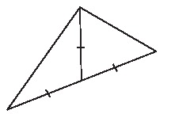

{% raw %}

<article>
  <h1>Geometric Tinkering</h1>
  <section class="development">
    <p>When you have a diagram, it is sometimes helpful to <em class="vocab">Fill
    in all the Information you Can</em>, even if you think it has
    nothing to do with the problem you have to solve. This is
    another example of <em class="vocab">tinkering</em>. Doing this will help you to see
    patterns and to notice things about the diagram that you
    might not have noticed otherwise. It is a wonderful thing to
    do when you are stuck on a problem.</p>

    <div class="problem" data-problem-number="1">
      <div class="problem-content">
        <p>The radius of the smallest circle is one unit. What is
        the ratio of
        the area of the largest circle to the area of the smallest
        circle?</p>
        <figure>
          
        </figure>
      </div>
    </div>

    <p>In the problem above, rather than trying to figure out the
    ratio of the two areas immediately, it makes more sense to
    figure out some smaller, manageable thing about the figure,
    and see where that leads us. A clear place to start is with
    the smallest circle. Once we find the area of that circle, we
    can then find the square that surrounds it. Can we then find
    the area of the second largest circle? By looking at the
    smallest parts, we can see the pattern which allows us to
    solve the original problem.</p>

    <p>In your previous experience with geometry, you probably
    learned some basic facts about angles, lines, and triangles.
    For instance, two angles that form a line add up to 180
    degrees, and so do the three angles of a triangle. You may
    also know that, in an isosceles triangle, the angles opposite
    the sides that are the same length are also the same. These
    facts will help you with many of the problems that
    follow.</p>
  </section>
  
  <section class="problems">

    <div class="problem" data-problem-number="2">
      <p>The two marked lengths are congruent. Find the measures
      of all the angles in
      the figure.</p>
      <figure>
        
      </figure>
    </div>

    <div class="problem" data-problem-number="3">
      <p>Find the measures of all the angles
      in the figure.</p>
      <figure>
        
      </figure>
    </div>

    <div class="problem" data-problem-number="4">
      <p>The area of this hexagon is 60. Find the product of the
      lengths of the segments AB and AC.</p>
      <figure>
        
      </figure>
    </div>

    <div class="problem" data-problem-number="5">
      <p>A smaller circle has radius 2 and a larger circle has
      radius 3. $A$ and $D$ are points on the tops of these circles.
      The circles are touching in the middle, as shown.</p>

      <p>Find the distance from $A$ to $D$.</p>
      <figure>
        
      </figure>
    </div>

    <div class="problem" data-problem-number="6">
      <p>Given that the four marked lengths are congruent, find
      $x$.</p>
      <figure>
        
      </figure>
    </div>

    <div class="problem" data-problem-number="7">
      <p>In the following diagram, $BC=5$, $AC=4$, and the circle $B$
      has four times the area of circle $A$. Find the area of
      circle $C$.</p>
      <figure>
        
      </figure>
    </div>

    <div class="problem" data-problem-number="8">
      <p>Find $x$.</p>
      <figure>
        
      </figure>
    </div>

    <div class="problem" data-problem-number="9">
      <p>Draw a square with vertices A, B, C, and D, in that
      order. Then draw an equilateral triangle with vertices A,
      B, and E, where E is a point outside the square. Connect
      points E and C with a line segment. Find the measure of
      angle ECB.</p>
    </div>

    <div class="problem" data-problem-number="10">
      <p>Repeat the previous problem, but this time place point E
      inside the square. Again, find the measure of angle
      ECB.</p>
    </div>

    <div class="problem" data-problem-number="11">
      <p>Find the measure of angle ABC.</p>
      <figure>
        
      </figure>
    </div>

    <div class="problem" data-problem-number="12">
      <p>Prove that the large triangle below is a right triangle.
      It may help to label some angles x and other angles y (give
      angles the same letter if you know they are the
      same!)</p>
      <figure>
        
      </figure>
    </div>

    <div class="problem" data-problem-number="13">
      <p>Find $x$.</p>
      <figure>
        
      </figure>
    </div>

    <div class="problem" data-problem-number="14">
      <p>Find $x$.</p>
      <figure>
        
      </figure>
    </div>

    <div class="problem" data-problem-number="15">
      <p>Find $x$.</p>
        <figure>
          
        </figure>
    </div>

    <div class="problem" data-problem-number="16">
      <p>Find the dimensions of a rectangular solid where the 12
      edges and both diagonals on all 6 faces are integers.</p>
    </div>

    <div class="problem" data-problem-number="17">
      <p>The triangle below is equilateral. Find the area of the
      circle.</p>
      <figure>
        
      </figure>
    </div>

    <div class="problem" data-problem-number="18">
      <p>The triangle below is the famous “3-4-5” right triangle;
      famous because it is one
      of the simplest triangles that satisfies the Pythagorean
      theorem: ${3^2} + {4^2} = {5^2}$.

      As you can see, the 3-4-5 right triangle has been placed
      in a rectangle. What is the height of the rectangle?</p>
      <figure>
        
      </figure>
    </div>

    <div class="problem" data-problem-number="19">
      <p>Three squares are lined up along the x-axis as shown,
      and the points with coordinates (0,4) and (21, 12) are
      labeled accordingly. Find AB. <cite>(MML 10/30/90)</cite></p>
      <figure>
        
      </figure>
    </div>

  </section>

</article>

{% endraw %}
